Hi, I'm Shashank!
Education

Bachelor's degree in Materials Science
Master's degree in Materials Science and Engineering
Graduate certificate in Applied Statistics
Academic Journey
The Pennsylvania State University
May 2022 – Dec 2023Graduate Certificate in Applied Statistics
Online | GPA: 4/4
University of California, Berkeley
Aug 2016 – May 2017Master of Engineering in Materials Science and Engineering
Berkeley, CA | GPA: 3.94/4
Concentration: Advanced Structural Materials.
Capstone Project: Improving Reliability of 3D Printed Materials in Biomedical Applications.
Indian Institute of Science
Aug 2012 – May 2016Bachelor of Science in Materials
Bengaluru, India | GPA: 7.4/8.0
Awarded The Institute Medal for exceptional academic performance.
Bachelor's thesis: Design-of-Experiment Based Process Optimization for Single-Crystal CMSX-4® Ni-based Superalloy Processed Through Scanning Laser Epitaxy (SLE), a Metal Additive Manufacturing Process
Core Competencies
Process Engineering, Additive manufacturing, Statistical analysis, Structural materials, and Cross-functional technical leadership.
All images are from my own work.
Core competencies
Statistics and Data analysis
- Design of Experiments (DOE)
- Multi-variate Analysis
- Regression Modeling
- Hypothesis Testing
- Proficient with JMP
Materials and Metallurgy
- Metal AM (Laser-based, sinter-based, and Molten Metal-based)
- AM Alloy process development (Fe, Cu, Ni, and Ti-base alloys)
- Mechanical Testing
- Microscopy and imaging (SEM/EDS, XRF, TEM, X-ray DR imaging)
Tools & Software
- JMP (Statistical Analysis)
- Scientific analysis with Python, Mathematica & Matlab
- Adobe Creative Suite
- Basic CAD (Solidworks, OnShape)
Systems and Process Engineering
- Process Scaling and Optimization
- New Product Development
- Root Cause & Failure Analysis (DFMEA)
- Vendor/Contract Manufacturer Management
Fluent Metal
Dec 2023 – PresentProcess Engineering Lead
End-to-end process development for molten metal jetting at Fluent Metal, a metal additive manufacturing and cladding startup.
Fluent Metal
Process Engineering Lead
Cambridge, MA, USA December 2023 – Present
Sole Process Engineer at Fluent Metal, a metal additive manufacturing and cladding startup.
- Process development for molten metal jetting: Led from-scratch process development for the proprietary molten metal drop-on-demand technology, successfully demonstrating printing capabilities across diverse materials including bronze, copper, stainless steel, silver, and tungsten.
- Process characterization and optimization: Designed and executed DOEs under an NSF-SBIR grant to characterize multi-variate behavior; developed an optimization framework comprised of multiple models to achieve targeted drop properties.
- Performance and throughput scaling: Optimized process parameters to stabilize printing, enabling continuous generation of tens of thousands of drops (>100x endurance increase) and boosting print frequency by >5x.
- Documentation, reporting, and data analysis: Established infrastructure to document experiments, analyzed quantitative, semi-quantitative, and qualitative data, and generated reports for internal and external consumption.
- Management of co-op/intern: Managed the co-op/intern hiring process end-to-end (reviewing applications, setting up and conducting virtual and in-person interviews, making and following up on offers), and also managed the hired co-op for six months.
Velo3D
Jun 2021 – Nov 2023Senior Process Engineer
A member of the Process Team at Velo3D, a manufacturer of LPBF metal 3D printers with proprietary SupportFree™ technology.
Velo3D
Senior Process Engineer
Campbell, CA, USA June 2021 – November 2023
A member of the Process Team at Velo3D, a manufacturer of laser powder bed fusion based metal 3D printers with proprietary SupportFree™ technology.
- New material and process development: Developed many core, skin, and low-angle processes for Ni, Fe, Ti, and Al-based materials.
- Laser stitching: Developed a novel algorithm to accurately adjust laser position and eliminate stitch lines when multiple lasers are used. This reduced mismatch from >300 µm to <10 µm across the entire build plate, and unlocked some novel applications for customers.
- Laser process metrology: Analyzed metrology data generated by the lasing system during printing to monitor defects.
- Metallurgical testing: Worked with external labs to coordinate heat treats, comprehensive mechanical testing, and microstructural analysis as part of the material qualification pipeline. Additionally, managed the purchase, operation, maintenance, and calibration of a few pieces of vital internal lab equipment.
- Powder metallurgy: Led characterization and qualification for new powders, including chemistry, flowability measurement, PSD, etc.
- Powder sourcing: Worked with metal powder vendors, domestic and international, to source specialty powders.
- Customer escalations: Swiftly addressed customer concerns by tuning existing processes or developing new ones, as required.
Gantri
May 2020 – Jun 2021Senior Materials Engineer
Led print process development and sustainable materials integration for a large fleet of FDM 3D printers.
Gantri
Senior Materials Engineer
San Francisco, CA, USA | May 2020 – June 2021
Sole Materials Engineer at Gantri, a producer of designer articles using 3D printing of sustainably sourced materials.
- Process engineering: Led print process development at the production facility, housing one of the largest fleets of FDM 3D printers at the time. Additionally, worked with vendors to specify and control incoming feedstock, for end-to-end process control.
- Print farm productivity: Developed printer and process improvements to lower rejection rate and improve print speed, often over 50%.
- New material and process discovery: Explored and developed new material systems and finishing processes that could improve product quality, surface finish, and yield, while increasing productivity and reducing carbon footprint and labor costs.
Chefman/CHEF iQ
Feb 2020 – Sep 2020
Product Development Engineer
End-to-end product development of kitchen appliances, collaborating closely with Asian contract manufacturers.
Chefman
Product Development Engineer
Mahwah, NJ, USA | February 2020 – September 2020
The team builds new products while working closely with contract manufacturers in Asia throughout the design process.
- New product development: Competitor benchmarking, prototyping, simulation and experimental evaluation of design, and materials selection for structural components and coatings. This includes Design Failure Mode and Effect Analysis (DFMEA).
- Failure analysis and sustaining engineering: Work with the Customer Support department to identify top failures on returned malfunctioning products, perform failure analysis, and roll out changes before the next batch is mass-produced.
Desktop Metal
Jun 2017 – Dec 2019Materials Engineer
Developed materials, processes, and equipment for the Studio System™ metal 3D printers.
Desktop Metal
Materials Engineer
Burlington, MA, USA | June 2017 – December 2019
- New alloy development: Led powder specification, sintering process development, microscopy and microanalysis, and Design-of-Experiments and statistics-backed process qualification for the development of five materials for the Studio System™ (including Stainless Steels, Tool Steels, low-alloy steels, and Ni-based superalloys).
- Development of materials processing equipment: Worked closely with the hardware and applied science teams in the development of the Studio System™ furnace, one of the smallest vacuum furnaces capable of sintering stainless steels.
- Post-processing: Developed and qualified post-processing techniques such as heat-treatment, case hardening, nitriding, and mechanochemical surface finishing of additively manufactured parts with partner vendors.
- Material science-based solution development: Developed the getter system, which provides an atmosphere of required purity and allows sintering of certain sensitive materials on the low-cost Studio System™ furnace (US Patent application US20220065533A1).
- Select other projects: Geometry accuracy and compensation (protected by 2 patents), toolpath planning, development of infrastructure to store experimental data (including IoT-based equipment logging).
GE Global Research
May 2014 – Jul 2014Internship
Investigated recrystallization due to compression straining in Ni-based superalloy GTD 444.
GE Global Research
Manufacturing and Materials Technologies Intern
Bangalore, India | May 2014 – July 2014
- Gained familiarity in Ni-based superalloys, particularly Single Crystal (SX) and Directionally Solidified (DS) superalloys.
- Performed systematic metallographic analysis and analyzed the micrographs using image processing techniques.
Get in Touch
I am always open to discussing new projects, creative ideas, or opportunities to be part of your vision.